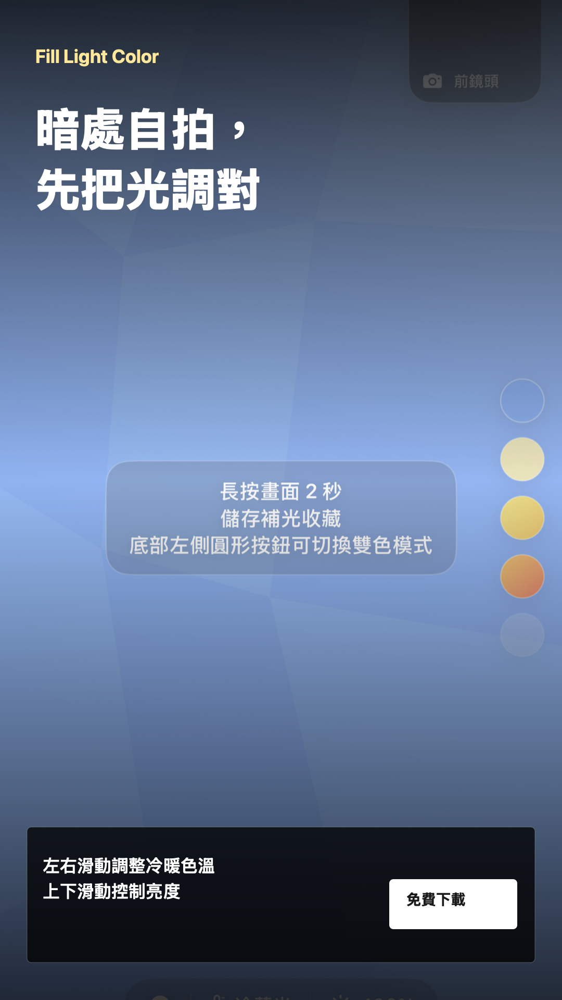
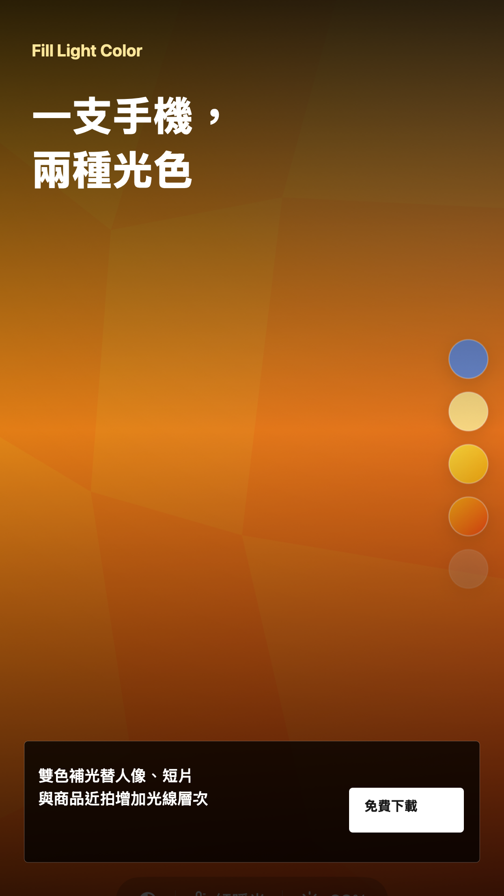
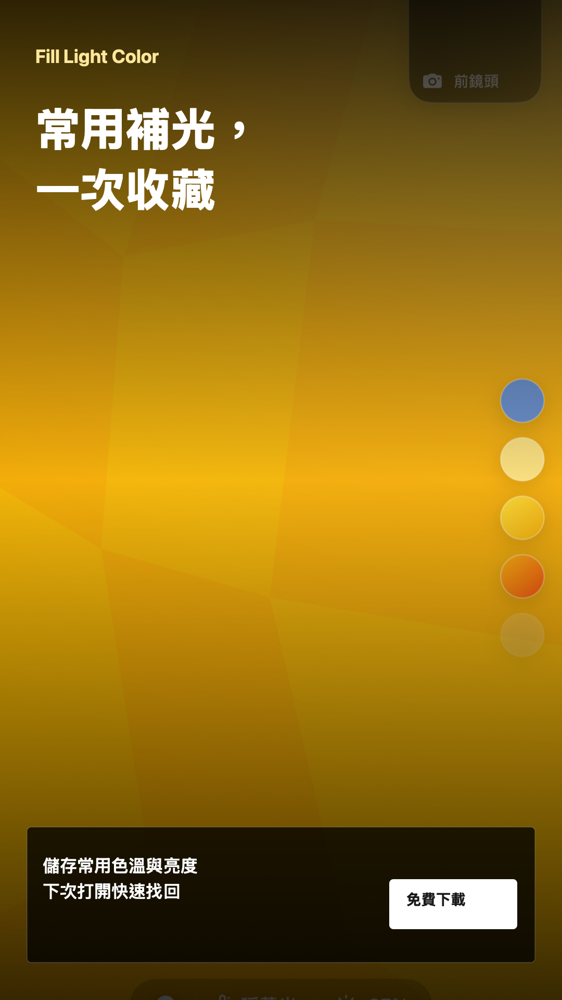

Download images
PNG, 1080 x 1920. Suitable for Stories, Reels covers, Shorts covers, TikTok posts, Pinterest, and vertical social posts.

{kind=link}

{kind=link}

{kind=link}
Ready-to-post copy
繁體中文
適合台灣、香港與繁體中文使用者。
自拍太暗，不一定要先買補光燈。Fill Light Color 能把 iPhone 螢幕變成可調色溫與亮度的柔光燈，支援前鏡頭預覽、雙色補光與常用設定收藏。適合自拍、夜間視訊、人像試光與商品近拍。App Store 免費下載： https://apps.apple.com/tw/app/fill-light-color/id6772977729 #補光燈 #自拍補光 #手機攝影 #FillLightColor
简体中文
适合简体中文社群与海外中文使用者。
自拍光线太暗，不一定要先买补光灯。Fill Light Color 可以把 iPhone 屏幕变成可调色温和亮度的柔光灯，支持前置摄像头预览、双色补光和常用设置收藏。适合自拍、夜间视频、人像试光与商品近拍。App Store 免费下载： https://apps.apple.com/app/fill-light-color/id6772977729 #补光灯 #自拍补光 #手机摄影 #FillLightColor
English
For English-language social posts.
Dark selfie or video call? Turn a second iPhone into an adjustable soft fill light with Fill Light Color. Tune brightness and color temperature, preview with the front camera, switch to dual-color light, and save favorite setups. Free on the App Store: https://apps.apple.com/app/fill-light-color/id6772977729 #FillLight #SelfieLight #MobilePhotography #FillLightColor
Share the App Store page
These buttons open the selected platform's share composer. Posting still requires a signed-in account on that platform.
{kind=link}